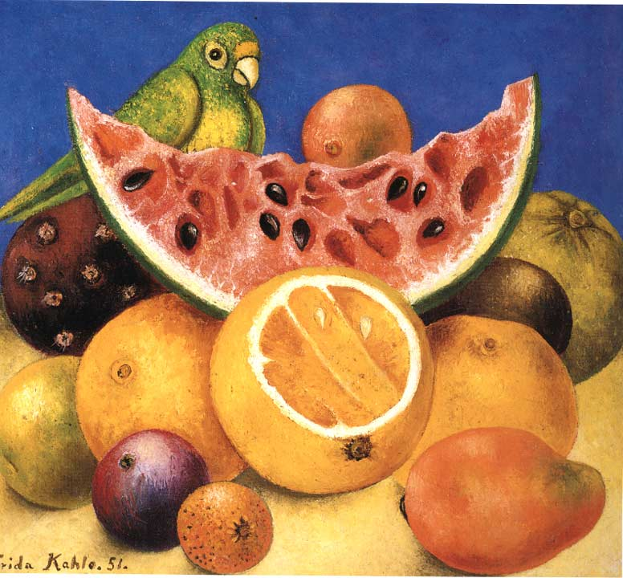
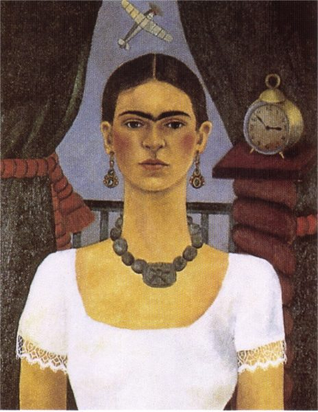
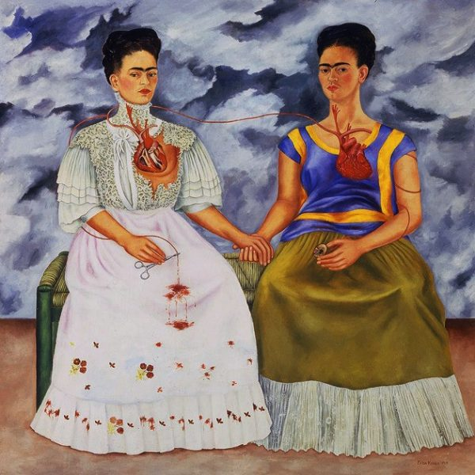

Paintings - Frida Kahlo
Naturaleza muerta con fruta y perico 1951
Naturaleza muerta con fruta y perico (1951) es una de las obras de Frida Kahlo en la que explora el género de la naturaleza muerta. En esta pintura, Kahlo representa una variedad de frutas mexicanas, como papayas, sandías, y plátanos, junto a un pequeño perico verde que añade un toque de vida y exotismo. Las frutas están cortadas, revelando sus colores vibrantes y texturas jugosas, lo que hace alusión tanto a la riqueza natural de México como a la fugacidad de la vida.
El perico, posado entre las frutas, simboliza la libertad y el espíritu mexicano, mientras que las frutas en descomposición pueden representar el paso del tiempo y la decadencia. Aunque esta obra se aparta de sus famosos autorretratos, Naturaleza muerta con fruta y perico sigue siendo personal, ya que refleja el amor de Kahlo por la naturaleza y su conexión con los temas de vida y muerte.


El tiempo vuela 1929
El tiempo vuela es una pintura de Frida Kahlo realizada en 1929. En esta obra, Frida explora el paso del tiempo y su relación con el dolor, la vida y la muerte, temas recurrentes en su arte. Aunque no es una de sus obras más conocidas, la pintura refleja el estilo y el simbolismo característicos de Kahlo, quien frecuentemente incorporaba elementos de la naturaleza, relojes o símbolos del tiempo para expresar sus emociones profundas y su lucha constante con el dolor físico.
Es posible que El tiempo vuela represente el sentimiento de que la vida avanza rápidamente, sin detenerse, a pesar de las experiencias difíciles o el sufrimiento que enfrentaba. La obra destaca la idea de que el tiempo es algo que no podemos controlar, pero que nos afecta profundamente.
Las dos Fridas 1939
Las dos Fridas (1939) es una de las pinturas más emblemáticas y personales de Frida Kahlo. En esta obra, Frida representa dos versiones de sí misma sentadas juntas y tomándose de la mano. La Frida de la izquierda está vestida con un elegante vestido blanco de estilo europeo, mientras que la Frida de la derecha lleva un traje tradicional mexicano. Ambas figuras están conectadas por sus corazones expuestos y una arteria que fluye entre ellas, aunque la Frida de vestido blanco tiene el corazón roto y sangrante, mientras que la Frida de traje mexicano sostiene unas pinzas quirúrgicas para evitar desangrarse.
Esta pintura refleja el conflicto interno de Kahlo tras su divorcio de Diego Rivera, representando su identidad dividida: la Frida europea, más influenciada por su educación y formación, y la Frida mexicana, que conserva sus raíces y su amor por su cultura. La obra simboliza su lucha entre la versión de sí misma que Diego amó y la que fue rechazada. Las dos Fridas es una exploración profunda de la dualidad, el dolor emocional, y la compleja identidad de la artista.
